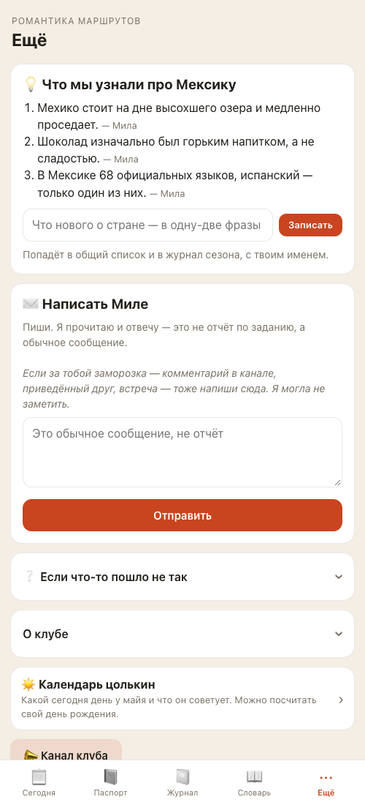

Одна дверь в клуб
План на 18 сентября. Что изменится для участниц в боте и в приложении, если ты скажешь «ок». Код ещё не написан.
Зачем это
Ты открыла бота и сказала: «он очень сложный, запутанный». Мы разобрались, почему: «Паспорт» есть и на клавиатуре, и в списке команд, и во вкладке приложения — а это один и тот же паспорт. Человек не понимает, чем они отличаются. Ничем.
Принцип, который мы вывели: чат приносит, приложение хранит. В чат приходит то, что случается — задание в понедельник, напоминание в четверг, твой ответ на отчёт. В приложение человек заходит сам за тем, что копится — паспорт, журнал, словарь. Сейчас обе категории лежат в обоих местах. После — каждая в своём.
Что увидят люди: было → станет
В чате

В приложении
Пять вкладок становятся тремя. Вот что куда переезжает.
| Сейчас | Станет | Что с ней |
|---|---|---|
| Сегодня | Неделя | Остаётся главной. Цолькин и слово недели переезжают из отдельного блока внизу в одну строку сверху. |
| Паспорт | Рюкзак | Штампы, уровень, заморозки, ачивки — как сейчас. |
| Журнал | Переезжает под паспорт — это его продолжение: свои отчёты и фото, кнопка «Собрать PDF». | |
| Словарь | Сезон | Слова недель — здесь. Форма «Добавить своё слово» остаётся — через неё участница получает +1 заморозку за первое слово. Куда деть чужие слова, решаем в отдельной задаче (ты сказала: личные), пока они показываются как сейчас. |
| Ещё | Факты «что узнали» и форма «записать факт» — здесь, внизу. «О клубе» и ссылка на канал — тоже в конец «Сезона». «Календарь цолькин» открывается по нажатию на строку дня в «Неделе». Форма «Написать Миле» исчезает — письмо пишется обычным сообщением в чат. Подсказка про заморозку за комментарий, встречу или приведённого друга переезжает в «Рюкзак», под ссылку «как заработать ещё» — иначе участница не узнает, куда об этом писать. «Если что-то пошло не так» — это /help в чате. |




Неделя
То, что происходит сейчас. Открывается первой.
Рюкзак
То, что человек накопил: паспорт, ачивки, журнал.
Сезон
То, что от тебя: недели летописью, слова, факты.
Правило простое: происходит — в «Неделе», накопилось — в «Рюкзаке», от Милы — в «Сезоне».
Два вопроса к тебе
1. Форма «Сдать отчёт» в приложении — оставить? 14 сентября мы записали: фото в приложение не тащить, «Сдать» возвращает в чат. Но пока мы это обсуждали, в приложении уже появилась форма с загрузкой фото — она работает, и по правилам продукта правка отчёта живёт именно там. Я за то, чтобы оставить оба пути: чат остаётся главным и самым быстрым, форма никому не мешает. Убирать работающее ради принципа — расточительно.
2. Прошедшие недели в «Сезоне» — летописью или полным заданием? Досдать прошедшую пока нельзя (это отдельная задача, «до конца сезона»). Значит, полный текст задания там пока ни к чему. Я за летопись: название, даты, слово. Когда сделаем поздние отчёты — добавим кнопку «Сдать» прямо туда.
Чего не трогаем
- Приём отчётов в чате, штампы, заморозки, уровни, напоминания — ни правил, ни текстов ответов бота.
- Твою админку — ни ⚙️ в чате, ни твою админскую страницу в приложении.
- Личные слова и факты, архив страны, поздние отчёты — это три отдельные задачи, записаны в правилах как «не реализовано».
- Данные. Ни одна строка в базе не удаляется и не переписывается: меняется только то, как они показаны.
Приёмка
По этому списку я и критики проверим, что сделано. Тот же список — в карточке задачи.
- В чате под полем ввода одна кнопка «🎒 Открыть клуб»; она и кнопка меню слева открывают приложение
- В списке команд бота — только /start и /help; старые команды продолжают отвечать, но не показываются
- Приложение открывается на «Неделе»: сверху день в цолькине и слово недели, ниже задание, намерение, все отчёты этой недели; между неделями — честная строка вместо пустоты, например «Задание недели 4 придёт в понедельник, 21 сентября»
- «Рюкзак»: паспорт со штампами, уровень и заморозки числом (со ссылкой «как заработать ещё»), ачивки, журнал с кнопкой «Собрать» с первого штампа и подписью «к концу сезона соберётся целиком»
- «Сезон»: начавшиеся недели летописью (название, даты, слово), слова недель, факты от Милы; будущих недель нет
- Приветствие и помощь бота говорят про новую кнопку, а не про «📋 Задание»; старые подписи кнопок бот по-прежнему опознаёт
- Отчёт в чат — текст или фото — засчитывается как раньше, ничего в приёме отчётов не меняется
- Правила продукта и руководство описывают новую раскладку; все проверки кода зелёные
Сколько займёт
Вечер на код, вечер на проверки. Честно: это перекомпоновка, а не постройка. Паспорт уже есть, журнал уже есть, задание уже есть — их надо переставить, переименовать и убрать дубли. Самое хлопотное — тексты бота: приветствие и помощь ссылаются на кнопки, которых не будет. Проверок будет две ступени: сначала на тренировочной копии — это копия бота на моём маке с выдуманными участницами, настоящие данные там не трогаются; потом ещё раз проверю всё целиком перед тем, как включить настоящим людям.
Что может затянуть: если ты решишь убрать форму «Сдать отчёт» из приложения (вопрос 1) — это ещё полвечера, потому что на неё завязана правка отчётов.
Что дальше
Ответь здесь, в чате, тремя строками: ответ на вопрос 1, ответ на вопрос 2, «ок» — или что поправить. До «ок» код не пишу.
Посмотреть, как приложение выглядит сейчас, можно на тренировочной копии — это отдельная копия бота на твоём маке с тридцатью выдуманными участницами, настоящие данные там не трогаются. Скажи «дай ссылку» — пришлю кликабельную.